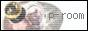

素敵サイト様
| ＨＰ | コメント |
| アトリエ アミ 手芸（パッチワーク他）の先生のＨＰです。 可愛い作品が沢山！いつか私も作ってみたいですｖ |
|
| 最高に素敵です。 | |
| 大好きな感じのサイトｖ（意味不 | |
| 管理人のお友達古夏さんのサイトｖ 可愛いですぞ〜（誰 |
バナー作ってみました。リンクはフリーですｖｖ
その場合は掲示板又はメールにてお知らせください。
遊びに行きますぅ〜〜ｖｖ

http://www.geocities.co.jp/NeverLand-Homeroom/6664/